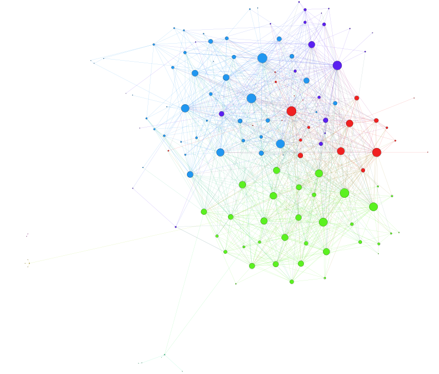

Svenska Yle's radio program Radar made multiple stories about alcohol usage in Finland.
Reporter Eva Koskinen contacted me and ask if it could be possible to visualize alcohol usage per municipality on a map. At the same time THL announced yearly numbers of alcohol sales.
Implementation makes use of Raphaël JavaSript library.
Embedding was done with <iframe>.
... time to see the code !
Alcohol map's code
Next: Spotlight case →
Case: Spotlight ja PerusS
Facebook scraping
Network analysis
“ I don't know anything about this ”→ “ Well you obviously do! ”
PerusS ja Islamofobia
Silminnäkijä and Spotlight made multiple stories about FDL's activities in Finland. Spotlight focused on True Finns linkages with the FDL.
So what we did
Firstly:
Spotlight's editor Marko Hietikko had collected a list of Facebook profiles consisting of interesting True Finn politicans and FDL members.
Made use of IT
Secondly:
Marko approached me if it could be possible to tell which people on the list are connected with each other in Facebook.
Outcome
Thirdly:
With the help of a little code it is possible to ask Facebook whether two profiles are friends with each other.
→ A dence network of people.
Benefits
Results could be used with interviews and while making counter-arguments.
Details were mainly for editorial usage but analysis was also used as background illustration in the story.

As a TV graphic
Absolutely complicated network visualizations are too difficult to be presented in detail in TV format but they could be used to have meaning and background for the work that had been done.
More examples including Twitter analysis and timelines.
Inspirational examples from abroad.
A short hands on experiment.
#Kuntavaalit at Twitter
“ The # symbol, called a hashtag, is used to mark keywords or topics in a Tweet. It was created organically by Twitter users as a way to categorize messages. ”


 TIMEOUT!
TIMEOUT!